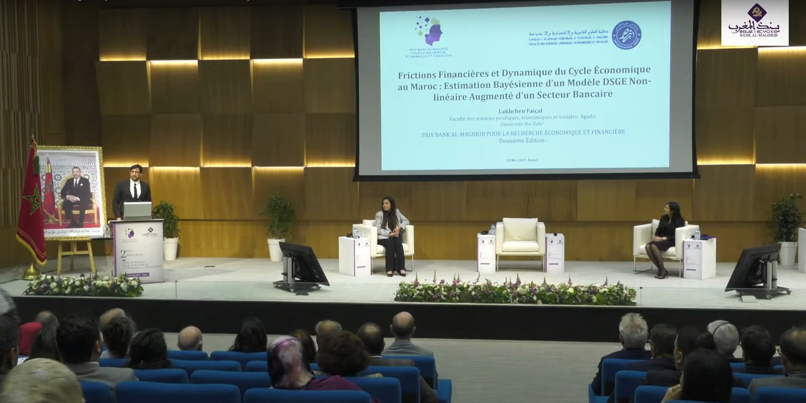

About the Prize
On May 14, 2025, Bank Al-Maghrib held in Rabat the award ceremony for the second edition of the Bank Al-Maghrib Prize for Economic and Financial Research. A reading committee of university professors and experts reviewed 30 submissions and shortlisted six candidates to present their research to the Prize Jury.
The Prize for Excellence was awarded for my work:
“Financial Frictions and Business Cycle Dynamics in Morocco: Bayesian Estimation of a Nonlinear DSGE Model Augmented with a Banking Sector”
The ceremony was attended by Governor Christopher J. Waller of the Board of Governors of the Federal Reserve, who delivered a lecture as guest of honor on the role of academic research in public policy, with a particular focus on monetary policy.
Media Coverage
The award has been highlighted by several national media outlets: